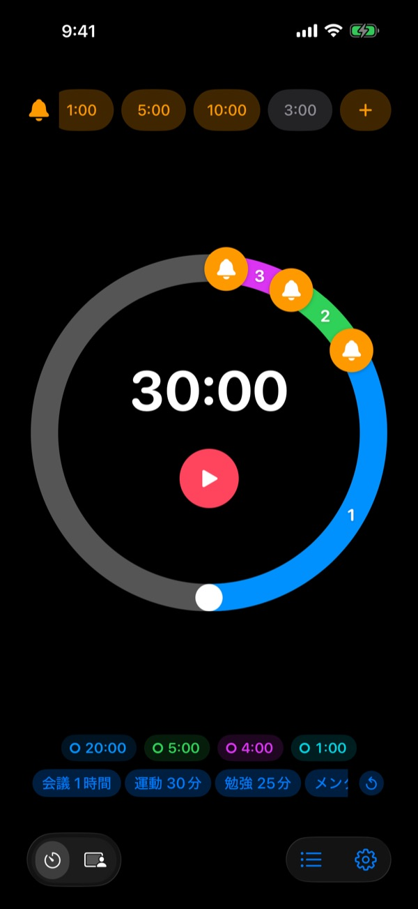
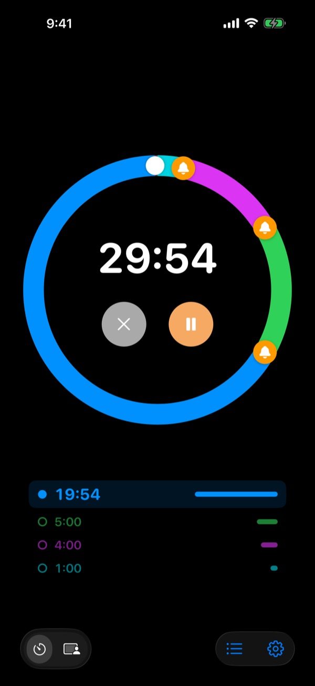
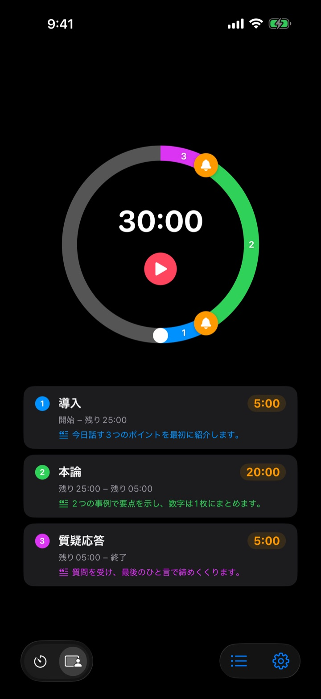
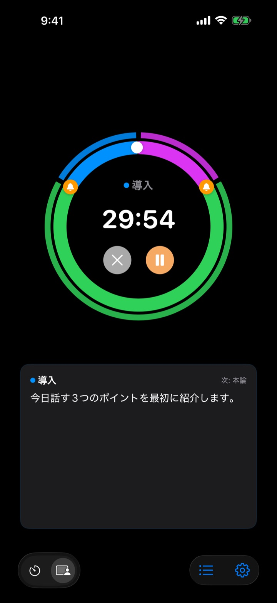

終わってからではなく
終わる前に
発表終了の5分前、会議終了の3分前。決めたタイミングごとに前もって知らせるので、時計をちらちら見ずに目の前のことに集中できます。
事前アラートは数の制限なく無料です。iPhone、Apple Watch、Macに対応。

ここで試してみる
長さとアラートを選んで赤いボタンを押してください。1分が1秒で進み、アラートの時間になると音で知らせます。
タイマーが鳴ったときには、もう手遅れだったことは？
普通のタイマーは0になって初めて鳴ります。発表は結論にたどり着く前に終わり、授業はまとめの前にチャイムが鳴り、会議は何も決まらないまま次の予定に押されます。必要なのは「終わった」の合図ではなく、まだまとめる時間が残っているうちの合図です。
終わる前に、好きなだけ予告
文字盤のベルをドラッグして、10分前、5分前、1分前など好きなタイミングに置きます。数の制限はなく、アラートごとに「スライドをまとめる」のようなメッセージも付けられます。
画面が消えていてもロック画面とDynamic Islandに残り時間が表示され、Apple Watchは手首で静かに振動します。

発表をパートに分ける
導入5分、本題20分、質疑応答5分のように、パートごとに名前と台本を書いておきます。パートが切り替わるたびにその名前で知らせるので、時間配分が自然と守れます。（Pro）

いま話すことが画面に出る
進行中は、いまのパートの台本と次のパートが大きく表示されます。時間を過ぎても0で止まらず、どれだけオーバーしたかを数え続けます。（Pro）

使い始めは3ステップ
- 1
時間を決める
文字盤を回すか、時間をタップして直接入力します。1周で60分、2周で120分です。
- 2
アラートを置く
上の1:00や5:00などのチップをタップするか、ベルを文字盤にドラッグします。
- 3
スタートしたら任せる
画面を消しても、決めたタイミングごとにiPhoneとApple Watchが知らせます。
よく使われる設定例
- 20分の発表
- 5分前「結論へ」、1分前「締めのあいさつ」
- 50分の授業
- 10分前「宿題の説明」、3分前「まとめ」
- 30分の会議
- 5分前「決定事項の確認」
- ピラティス・ヨガのセッション
- ポーズごとにパートを分けたセッションモード（Pro）
- 25分の勉強
- 5分前、終わったら休憩
- 筋トレのセット間休憩3分
- 30秒前「次のセットの準備」
- 1時間のメンタリング・面談
- 15分前、5分前
よく使う設定はテンプレートとして保存しておけば、ワンタップで呼び出せます（記憶以上）。ショートカットやSiriでタイマーを開始・停止することもできます。
事前アラートは無料。覚えておいてほしいなら有料プランを
無料
- 事前アラートは数の制限なし
- アラートごとに自分で書くメッセージ
- ロック画面とDynamic Islandのライブアクティビティ
- 確認するまで鳴らし続ける、終了時にアラームで鳴らす
- Apple WatchアプリとMacのメニューバー
- すべてのテーマカラー
記憶 · Pro
- 記憶：設定をテンプレートとして保存し、ワンタップで呼び出す
- 記憶：アプリを開き直しても前回の設定のまま
- Pro：記憶のすべてと、セッションモード（パート名と台本）
- Pro：オーバータイム、履歴と統計
記憶とProは、それぞれ年額か買い切りを選べます。セッションモード、オーバータイム、履歴は購入前に何回か試せます。
広告はありません。ずっとパスがあれば、Leeoが作るすべてのアプリが使えます。
よくある質問
アラートが鳴りませんでした。
ほとんどは通知の許可か集中モードが原因です。アプリの設定 › 通知方法で通知の許可を確認してください。集中モードを使っている場合は、iOSの設定 › 集中モードでRereminderを通知を許可するアプリに追加してください。消音モードでは振動だけになります。設定 › 通知 › 時刻指定要約に入っていると通知がまとめて遅れて届くので、外してください。
消音モードでも終わったことに気づけますか？
はい。設定で「終了時にアラームで鳴らす」をオンにすると、消音モードや集中モード中でも大きく鳴ります。「確認するまで鳴らし続ける」をオンにすると、通知の停止かスヌーズを押すまで知らせ続けます。
Apple Watchと同期されません。
アプリの設定 › 自分のデバイスを開くと、どの段階が足りないかが表示されます。WatchがこのiPhoneとペアリングされていること、WatchにRereminderがインストールされていること、インストール後にWatchでアプリを一度開いたことを確認してください。そのあとはWatchのアプリを閉じていてもタイマーの状態が引き継がれます。
Macが「未接続」と表示されます。
「接続済み」は、直近10分以内にそのMacでアプリが開いていたという意味です。スリープから復帰したばかりのMacは数分後に表示されます。両方のデバイスで同じiCloudアカウントにサインインし、iCloud Driveをオンにしてください。MacはmacOS 26以降が必要です。
購入したのに反映されません。
プラン画面で「購入を復元」をタップしてください。購入したときと同じAppleアカウントでサインインしている必要があります。買い切りで購入したものは、アプリを削除して入れ直しても、機種変更しても戻ってきます。
保存したテンプレートがロックされています。
テンプレートは消えていません。記憶かProがないとロックされたまま残り、購入するとすぐにまた使えるようになります。
返金してほしいです。
返金はAppleが対応します。購入したAppleアカウントでreportaproblem.apple.comからリクエストしてください。不具合が理由なら、こちらにも知らせていただけると次の人が同じ目に遭わないよう直します。
インストールせずに試せますか？
iPhoneでm1zz.github.io/rereminderを開くと、App Clipですぐにタイマーが動きます。文字盤とアラートはそのままで、テンプレート、セッションモード、Watchアプリは正式版にあります。
どのデバイスで使えますか？
iPhoneはiOS 26以降、Apple WatchはwatchOS 11.6以降、MacはmacOS 26以降です。iPadにはまだ対応していません。アプリは24の言語で使えます。
データはどこに保存されますか？
タイマー、テンプレート、パート名、台本、履歴はすべてデバイスの中にあり、アプリを削除すると一緒に消えます。送信するのはアプリの改善に使う匿名の利用統計だけで、詳しくはプライバシーポリシーに書いています。
ご質問やご意見はleeo@kakao.comまでお送りください。通常2〜3日以内にお返事します。